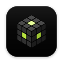

Windows
Windows 10 and 11, 64-bit. Installs just for you, no admin needed.
Get the installer ↓ How to install
KRNL0 DownloadFree. No account. Your plan stays on your computer.
KRNL0 runs on a computer. Open this page on your Windows PC or Mac to install it.
Other systems and how to install ↓
Windows 10 and 11, 64-bit. Installs just for you, no admin needed.
Get the installer ↓ How to installMacs with Apple silicon (M1 and newer).
Get the disk image ↓ How to installOne file that runs on most distributions, no install needed.
Get the AppImage ↓ How to installKRNL0 doesn't have a paid signing certificate yet, so Windows doesn't know who made it. The installer is built in public on GitHub, from code anyone can read. Two clicks, and Windows won't ask again.
Open the file you downloaded. When this blue window appears, click More info.
Click Run anyway. The installer runs by itself in a few seconds.
KRNL0 opens, and you'll find it in the Start menu from now on.
On older macOS you can also right-click KRNL0 (or Control-click it), choose Open, and click Open again.
The Linux version is on its way. Until it is out, you can run KRNL0 from its source code, as shown below.
chmod +x KRNL0-*.AppImage && ./KRNL0-*.AppImage
Or from the source
git clone https://github.com/theMindDeveloper/krnl0 && cd krnl0 && npm install && npm run dev
When a new version is out, download it here and run it over the old one. Your board lives in your Documents folder, so it stays as it is.
No account, no tracking. YouTube videos and AI only reach their own services when you use them.
Read the code, build it yourself, or help make it better. MIT licence.
Needs: Windows 10 or 11 (64-bit), a Mac with Apple silicon, or LinuxInternet: only for YouTube videos and AI, if you use them